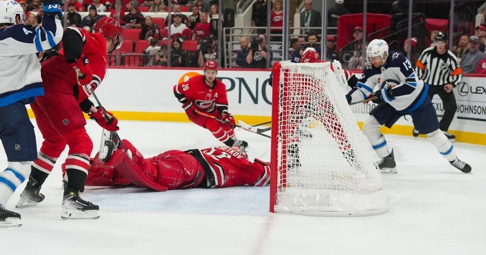

Pyotr Kochetkov Is 10-0: 26-Save Shutout Powers Hurricanes' 7-0 Rout of the Jets
Pyotr Kochetkov stopped all 26 shots he faced in a 7-0 win over Winnipeg, becoming just the third goalie in NHL history to win his first 10 games of a season.

Pyotr Kochetkov just keeps winning, and on Sunday he did it with nothing getting past him at all. The Carolina goaltender stopped all 26 shots he faced as the Hurricanes routed the Winnipeg Jets 7-0 at Lenovo Center in Raleigh, moving to 10-0 to start the season.
That puts Kochetkov in company almost nobody keeps. He is just the third goaltender in NHL history to win each of his first 10 games of a season, joining Jack Campbell, who won 11 straight to open 2020-21, and Carey Price, who won 10 to open 2016-17 for Montreal. It is the longest winning streak to begin a season in Hurricanes franchise history, and it ties Price for the second-longest season-opening run ever.
A shutout with a slow start and a loud middle
The shutout was not a quiet one early. Carolina's offense did most of the talking first. Sean Walker opened the scoring with a short-handed goal 5:16 into the game, and the Hurricanes poured it on in the second period, scoring four times in a 7:14 span. Walker's second goal made it 4-0, and Logan Stankoven's team-leading 10th goal of the season stretched the lead to 5-0 before the midway mark of the second.
Winnipeg had managed only five shots on goal to that point, and goaltender Stuart Skinner was pulled after the fifth goal, departing with 12 saves. Clay Stevenson stopped 13 the rest of the way, but the damage was done.
Then Kochetkov had to earn it. Winnipeg sent nine shots his way in the next 10 minutes of the second period, and he turned every one of them aside. Mark Jankowski added a power-play goal to make it 6-0 in the third, Jesperi Kotkaniemi closed the scoring at 8:38 of the third, and the shutout was intact at the final horn.
The supporting cast
Walker finished with two goals, his first multi-goal game in two seasons with Carolina. Juuso Valimaki, Sebastian Aho, Stankoven, Jankowski, and Kotkaniemi also scored. Seth Jarvis, Nikolaj Ehlers, Shayne Gostisbehere, and Stankoven each posted two assists, and Aho reached 20 points through 16 games, the quickest he has ever gotten there in his career.
It was also a milestone afternoon for Jaccob Slavin, who played his 800th NHL game, all of them with the Hurricanes.
What the streak means
The shutout was Kochetkov's second of the season and the 13th of his career in 135 games. Across his 10 appearances this season he owns a 1.49 goals-against average and a .929 save percentage, and he was just named the NHL's third star of October after a 9-0-0 month. Carolina's 11-win October tied the NHL record for victories in a single October.
The Hurricanes are now 12-2-2, winners of four straight and 12 of their last 14. The Jets fall to 4-8-3, losers of nine straight.
Ten wins, no losses, and now a shutout to cap the weekend. The rest of the league has officially run out of ways to describe what Kochetkov is doing that do not sound like history.
Sources
• ESPN box score, Jets at Hurricanes, November 1, 2026 (event 401892624)
• NHL.com game recap, November 1, 2026
• Deadspin / Field Level Media game report, November 1, 2026
• Associated Press game report, November 1, 2026
Gear up: Fanatics